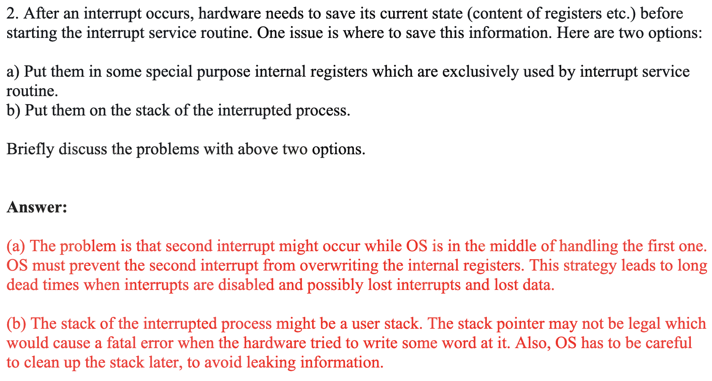

3 Process
Process concept¶
- How to use computer resources, such as CPU, memory
- A process is a program1 in execution
{kind=link}
Memory Layout of a C Program¶
{kind=link}
Process Control Block (PCB)¶
Information associated with each process (also called task control block): - Allocate a PCB on new process creation; - Free the PCB on process termination. - Each process has and only has a PCB.
struct PCB {
int pid;
// Process state – running, waiting, etc.
enum { running, ready, waiting } status;
// Scheduling information - priorities,schedule queue pointers
int priority;
struct PCB *next_ready;
// Program counter – location of instruction to next execute
void *PC;
// CPU registers – contents of all process-centric registers
// Memory-management information: page tables, etc.
// Accounting information – CPU used, clock time elapsed since start, time limits
// I/O status information: list of open files and so on.
}
Knowledge
In Linux, PCB represented by the C structure task_struct.
Process State¶
- New: The process is being created
- Running: Instructions are being executed
- Waiting: The process is waiting for some events to occur
- Ready: The process is waiting to be assigned to a processor
- Terminated: The process has finished execution
（下面这个图 swb 老师说必考）
{kind=link}
new (Process Creation)¶
A process may create new processes, in which case it becomes a parent, we obtain a tree of processes.
fork()¶
- fork() creates a new process
- The child is is a copy of the parent, but: It has a different pid (and thus ppid); Its resource utilization (so far) is set to 0
- fork() returns the child’s pid to the parent, and 0 to the child
-
Both processes continue execution after the call to fork()
-
Pros
- Simplicity: Windows CreateProcess requires 10 parameters.
- Division of Labor: fork builds the skeleton, exec gives it life.
- Connectivity: Maintains relationships between processes.
- Cons
- Complexity
- Poor performance
- Security issues
fork() return values¶
Question
How does fork() return two values (Return new_pid to parent and zero to child) ?
For parent process, fork is just a syscall, similar to write; user mode context (registers) saved:
- When: kernel_entry;
- Where: per-process kernel stack, more specifically pt_regs
- copy the user space code; new_pid is returned to parent via syscall return value (saved in pt_regs)
For child process,also via pt_regs, pt_regs[0] = 0; set the return value to 0
- When will child process start to run and from where?
- When: scheduled (switch to)
- where: from ret_to_fork
- ret_from_fork -> ret_to_user -> kernel_exit who restores the pt_regs
{kind=link}
Help
我们需要谨记两点：
- fork() 后的子进程是接在产生其的指令之后进行的；
- fork() 在父进程的值为子进程的 pid，而在子进程中值为 0
下面 fprintf 将输出什么内容？
**include**{: .hash} <stdio.h>
**include**{: .hash} <unistd.h>
#include <sys/types.h>
int main() {
int a = 12;
pid_t pid = fork();
if (pid == -1) {
printf("error");
}
if (pid > 0) { // PARENT
sleep(3); // ask the OS to put me in Waiting
printf("a = %d\n", a);
while (1);
} else { // CHILD
a += 3;
while (1);
}
}
parent 和 child 是两个进程，互不干扰。所以最后输出 12 。
{kind=link}
[!EXAMPLE]- 下面将输出多少个
hello?#include <stdio.h> #include <unistd.h> #include <sys/types.h> int main() { pid_t pid1, pid2; pid1 = fork(); printf("hello\n"); pid2 = fork(); printf("hello\n"); }fork() 1 -pid1-> 2 -> printf -pid2-> 4 ->printf ；故输出 2+4 次。
[!EXAMPLE]- 下面一共创建了多少个进程？
#include <stdio.h> #include <unistd.h> #include <sys/types.h> int main(int argc, char* arg[]) { fork(); if (fork()) { fork(); } fork(); }[!QUESTION]
fork()结束后，子进程处于什么状态？fork()的下一行的 pc 存在哪？Ready.
{kind=link}
The exec*() Family of Syscalls¶
The “exec” system call replaces the process image by that of a specific program
[!EXAMPLE]-
#include <stdio.h> #include <unistd.h> #include <sys/types.h> #include <sys/wait.h> int main(int argc, char* arg[]) { if (fork() == 0) { // runs ls char* const argv[] = { "ls", "-l","./", NULL }; execv("/bin/ls", argv); } else { wait(NULL); } // sleep(1); printf("Parent process\n"); }执行上诉代码我们可以发现
， （子进程）执行了ls命令；但是只输出了一次Parent process；也就是说，子进程在执行execv后整个程序其实就被替换了，之后的内容不会再执行。
{kind=link}
Ready & Wait (to learn)¶
Process scheduler selects among ready processes for next execution on CPU core.Maintains scheduling queues of processes - Ready queue – set of all processes residing in main memory, ready and waiting to execute - Wait queues – set of processes waiting for an event (i.e., I/O)
Ready and Wait Queues


Waiting wait()¶
A parent can wait for a child to complete (man 2 wait)
- The wait() call
- blocks until any child completes
- returns the pid of the completed child and the child’s exit code
- The waitpid() call
- blocks until a specific child completes
- can be made non-blocking with WNOHANG options
Terminated (Process Terminations)¶
- A process terminates itself with the exit() system call
- This call takes as argument an integer that is called the process’ exit/return/error code
- All resources of a process are deallocated by the OS
- physical and virtual memory, open files, I/O buffers, ...
- A process can cause the termination of another process
- Using something called “signals” and the kill() system call
Zombie Process¶
- When a child process terminates, it remains as a zombie in an “undead” state, Until it is “reaped” (garbage collected) by the OS, because PCB cannot be deallocated by the child process.
- They’re not really processes, they do not consume
resourcesCPU - They only consume a slot in memory (PCB), which may eventually fill up and cause fork() to fail
- They’re not really processes, they do not consume
Getting rid of zombies¶
A zombie lingers on until: - its parent has called wait() for the child, or - its parent dies
- When a child exits, a SIGCHLD signal is sent to the parent
- The parent associates a handler to SIGCHLD
- The handler calls wait()
- This way all children deaths are “acknowledged”
Orphans¶
- An orphan process is one whose parent has died
- In this case, the orphan is “adopted” by the process with pid 1
- The process with pid 1 does handle child termination with a handler for SIGCHLD that calls wait, so an orphan never becomes a zombie
Signal¶
Processes and Signals¶
- A process can receive signals, i.e., software interrupts
- Signals have many usages, including process synchronization
- The OS defines a number of signals, each with a name and a number, and some meaning (using
man 7 signal)
Manipulating Signals¶
- Each signal causes a default behavior in the process (e.g., a SIGINT signal causes the process to terminate)
- But most signals can be either ignored or provided with a user-written handler to perform some action
- Signals like SIGKILL and SIGSTOP cannot be ignored or handled by the user, for security reasons
context switch¶
When CPU switches to another process, the system must save the state of the old process and load the saved state for the new process via a context switch.
{kind=link}
Context of a process represented in the PCB (task_struct in Linux).
- Context switching between two kernel threads, When and where is the context (regs) saved?
- When: In context_switch, more specifically in cpu_switch_to
- Where: In PCB, more specifically in thread_struct
- All regs are running kernel code, termed kernel context
{kind=link}
- Context switching between two user threads
- Context switching has to occur in kernel mode (why? )
- When and where is the user context (regs) saved?
- When: kernel_entry;
- Where: per-thread kernel stack, more specifically pt_regs
- when to restore: kernel_exit
- When and where is the kernel context (regs) saved?
- When: cpu_switch_to;
- Where: thread_struct

What's about calling System call?
{kind=link}
lr (on arm64) : link register, holding return address
{kind=link}
而在我们实现的 linux 内核中，充当这一功能的是 mepc/sepc/ra(x1) .
pt_regs (process trace)¶

上图中的 stack 是 kernel space 的内存布局；而我们之前所看到的是 user space 的内存布局。
Question
Where does cpu_switch_to() return to? When is the value set?
Return to the caller of cpu_switch_to à eventually to schedule(). If Process 1 calls schedule() to give up CPU, it eventually returns to right after schedule()
Question
https://www.cs.cornell.edu/courses/cs414/2007sp/homework/hw1_soln.pdf 
{kind=link}
Thread¶
Why threads? - Multiple tasks of an application can be implemented by threads - E.g., update display, fetch data, spell checking - Process creation is heavy-weight while thread creation is light-weight - Threads can simplify code, increase efficiency - Kernels are generally multithreaded
Thread may be provided either at the user level, or by the kernel - User threads are supported above the kernel and managed without kernel support - Three thread libraries: POSIX Pthreads, Win32 threads, and Java threads - Kernel threads are supported and managed directly by the kernel - All contemporary OS supports kernel threads - A relationship must exist between user threads and kernel threads
models: - many to one - one to one (used most) - many to many - two levels
-
program: passive entity (bytes stored on disk as part of an executable file) becomes a process when it’s loaded in memory. ↩